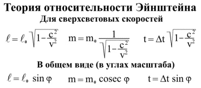
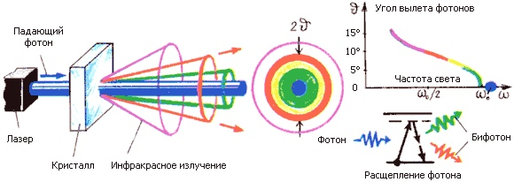

Альберт Эйнштейн - автор более 300 научных работ по физике, а также около 150 книг и статей в области истории и философии науки, публицистики и др. Он разработал несколько значительных физических теорий: специальная теория относительности и общая теория относительности.

E=mc^2 означает что масса и энергия — это одно и то же. То есть масса — это частный случай энергии. Энергию, заключенную в массе чего угодно, можно посчитать по этой простой формуле.

О́бщая теория относительности — геометрическая теория тяготения, развивающая специальную теорию относительности (СТО), предложенная Альбертом Эйнштейном в 1915—1916 годах.
В этой теории постулируется, что гравитационные и инерциальные силы имеют одну и ту же природу.

Рассеяние света — рассеяние электромагнитных волн видимого диапазона при их взаимодействии с веществом. При этом происходит изменение пространственного распределения, частоты, поляризации оптического излучения, хотя часто под рассеянием понимается только преобразование углового распределения светового потока.